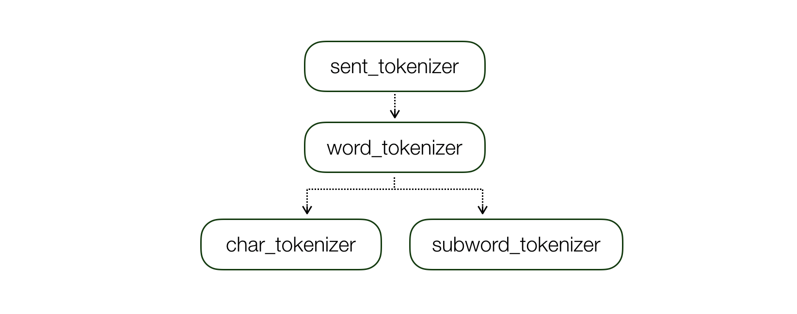

Tokens¶
TokenMakers consists of Tokenizer, Indexer, Vocabulary, and Embedding Modules.TokenMaker is responsible for the indexing of text and the generation of the tensors through the embedding module.
Tokenizers¶
Tokenizer Design

class SentTokenizer(name, config): ...
class WordTokenizer(name, sent_tokenizer, config) ...
class SubwordTokenizer(name, word_tokenizer, config) ...
class CharTokenizer(name, word_tokenizer, config) ...
The Tokenizer has a dependency with the other unit’s tokenizer and the tokenize() function takes the input of text units.
(* unit: unit of input e.g. ‘text’, ‘sentence’ and ‘word’)
tokenizer()example
>>> text = "Hello World.This is tokenizer example code."
>>> word_tokenizer.tokenize(text, unit="text") # text -> sentences -> words
>>> ['Hello', 'World', '.', 'This', 'is', 'tokenizer', 'example', 'code', '.']
>>> word_tokenizer.tokenize(text, unit="sentence") # text -> words
>>> ['Hello', 'World.This', 'is', 'tokenizer', 'example', 'code', '.']
Several tensors in a sub-level text unit can be combined into a single tensor of higher level via a vector operation. For example, subword level tensors can be averaged to represent a word level tensor.
e.g.) concatenate [word; subword] (subword tokens –average–> word token)
The list of pre-defined
Tokenizers:
| Text Unit | Language | Name | Example |
|---|---|---|---|
| BPE | All (depend on vocab) | roberta | Hello World -> ["ĠHello", "ĠWorld"] |
| Char | All | character | Hello World -> ["Hello", "World"] -> [["H", "e", "l", "l", "o"], ["W", "o", "r", "l", "d"]] |
| Char | Korean | jamo_ko | "안녕 세상" -> ["안녕", "세상"] -> [["ㅇ", "ㅏ", "ㄴ", "ㄴ", "ㅕ", "ㅇ"], ["ㅅ", "ㅔ", "ㅅ", "ㅏ", "ㅇ"]] |
| Subword | All (but, need vocab.txt) | wordpiece | "expectancy of anyone" -> ["expectancy", "of", "anyone"] -> ["expect", "##ancy", "of", "anyone"] |
| Word | English | nltk_en | - |
| Word | English | spacy_en | - |
| Word | Korean | mecab_ko | - |
| Word | All | bert_basic | - |
| Word | All | space_all | "Hello World" -> ["Hello", "World"] |
| Sent | All | punkt | "Hello World. This is punkt tokenizer." -> ["Hello World.", "This is punkt tokenizer."] |
Token Maker¶
The list of pre-defined
Token Maker:
| Type | Description | Category | Notes |
|---|---|---|---|
| char | character -> convolution -> maxpool | CharCNN |
- |
| cove | Embeddings from Neural Machine Translation | NMT |
- From Salesforce |
| feature | Do not use embedding function, just pass feature | Feature |
- |
| word | word -> Embedding (+pretrained) | Word2Vec |
- |
| frequent_word | word token + pre-trained word embeddings fixed and only fine-tune the N most frequent | Word2Vec + Fine-tune |
- |
| exact_match | Three simple binary features, indicating whether p_i can be exactly matched to one question word in q, either in its original, lowercase or lemma form. | Feature |
- Sparse or Embedding - Only for RC |
| elmo | Embeddings from Language Models | LM |
From Allennlp |
| linguistic | Linguistic Features like POS Tagging, NER and Dependency Parser | Feature |
- Sparse or Embedding |
Example of tokens in BaseConfig
"token": {
"names": ["char", "glove"],
"types": ["char", "word"],
"tokenizer": { # Define the tokenizer in each unit.
"char": {
"name": "character"
},
"word": {
"name": "treebank_en",
"split_with_regex": true
}
},
"char": { # token_name
"vocab": {
"start_token": "<s>",
"end_token": "</s>",
"max_vocab_size": 260
},
"indexer": {
"insert_char_start": true,
"insert_char_end": true
},
"embedding": {
"embed_dim": 16,
"kernel_sizes": [5],
"num_filter": 100,
"activation": "relu",
"dropout": 0.2
}
},
"glove": { # token_name
"indexer": {
"lowercase": true
},
"embedding": {
"embed_dim": 100,
"pretrained_path": "<glove.6B.100d path>,
"trainable": false,
"dropout": 0.2
}
}
},
# Tokens process
# Text -> Indexed Featrues -> Tensor -> TokenEmbedder -> Model
# Visualization
# - Text: Hello World
# - Indexed Feature: {'char': [[2, 3, 4, 4, 5], [6, 7, 8, 4, 9]], 'glove': [2, 3]}
# - Tensor: {'char': tensor, 'glove': tensor}
# - TokenEmbedder: [char; glove] (default: concatenate)
# - Model: use embedded_value